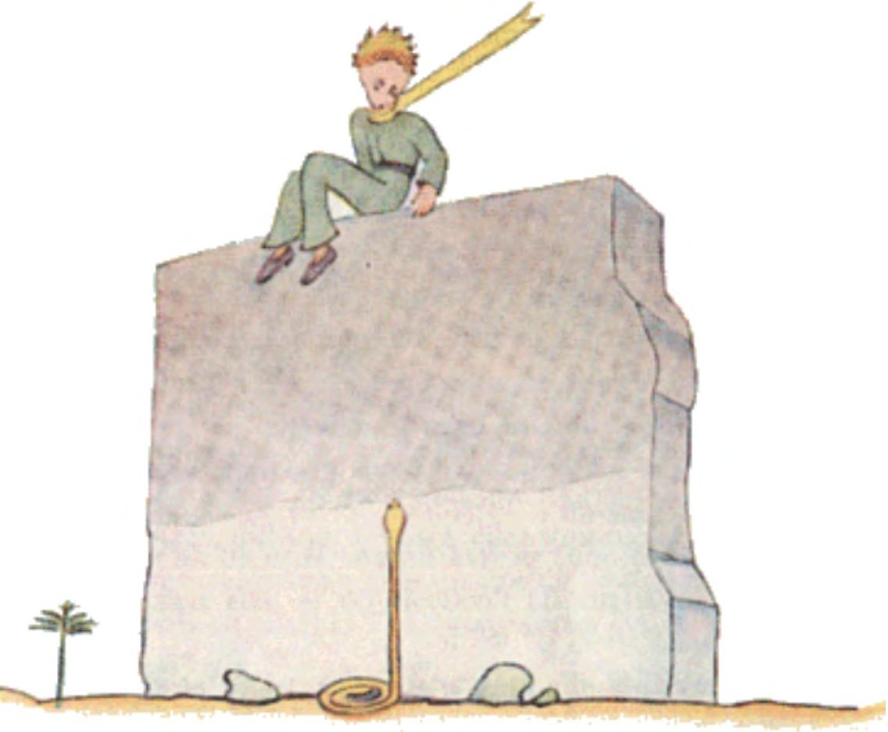

“Oh, that will be all right,” he said, “children understand.” So then I made a pencil sketch of a muzzle. And as I gave it to him my heart was torn. “You have plans that I do not know about,” I said. But he did not answer me. He said to me, instead: “You know, my descent to the earth... Tomorrow will be its anniversary.” Then, after a silence, he went on: “I came down very near here.” And he flushed. And once again, without understanding why, I had a queer sense of sorrow. One question, however, occurred to me: “Then it was not by chance that on the morning when I first met you — a week ago — you were strolling along like that, all alone, a thousand miles from any inhabited region? You were on the your way back to the place where you landed?” The little prince flushed again. And I added, with some hesitancy: “Perhaps it was because of the anniversary?” The little prince flushed once more. He never answered questions, but when one flushes does that not mean “Yes”? “Ah,” I said to him, “I am a little frightened...” But he interrupted me. “Now you must work. You must return to your engine. I will be waiting for you here. Come back tomorrow evening...” But I was not reassured. I remembered the fox. One runs the risk of weeping a little, if one lets himself be tamed... Beside the well there was the ruin of an old stone wall. When I came back from my work, the next evening, I saw from some distance away my little prince sitting on top of a wall, with his feet dangling. And I heard him say: “Then you don’t remember. This is not the exact spot.” Another voice must have answered him, for he replied to it: “Yes, yes! It is the right day, but this is not the place.” I continued my walk toward the wall. At no time did I see or hear anyone. The little prince, however, replied once again: “...Exactly. You will see where my track begins, in the sand. You have nothing to do but wait for me there. I shall be there tonight.”
